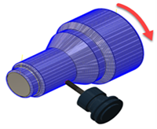

<div id="simulation_view_mode"><p>シミュレーションの表示方法をコントロールします。</p>
<ul>
<li><b>モデル</b>: モデルが画面上で動かずに表示されるようにビューが維持され、工具がモデルを基準にして移動します。</li>
<li><b>工具</b>: 工具が画面上で動かずに表示されるようにビューが維持され、モデルが工具を基準にして移動します。ねじ切り操作や回転操作の視覚化に役立ちます。</li>
</ul>
<table class="tipTable" cellspacing="10">
<tr>
<td><center></center></td>
<td><center></center></td>
</tr><tr>
<td><center><p><b>視点 = モデル</b><br></p></center></td>
<td><center><p><b>視点 = 工具</b></p></center></td>
</tr></table>
</div>